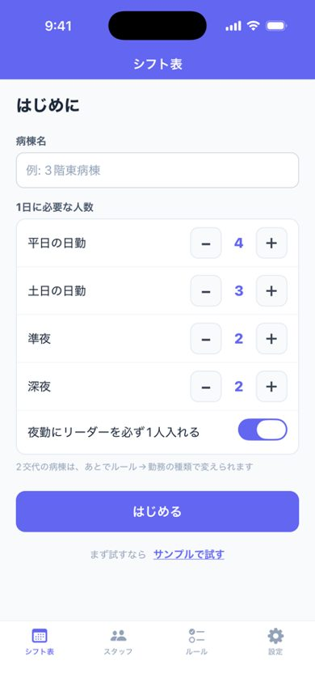
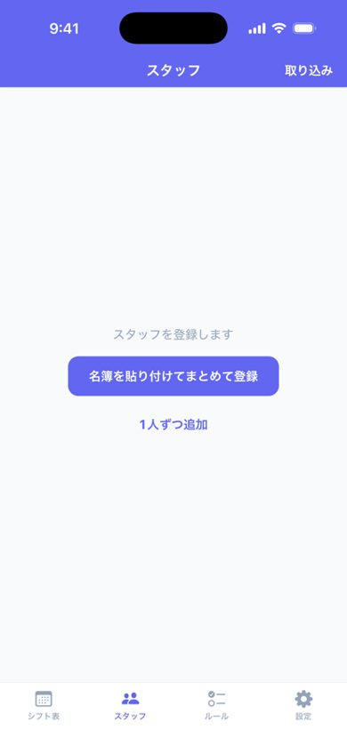
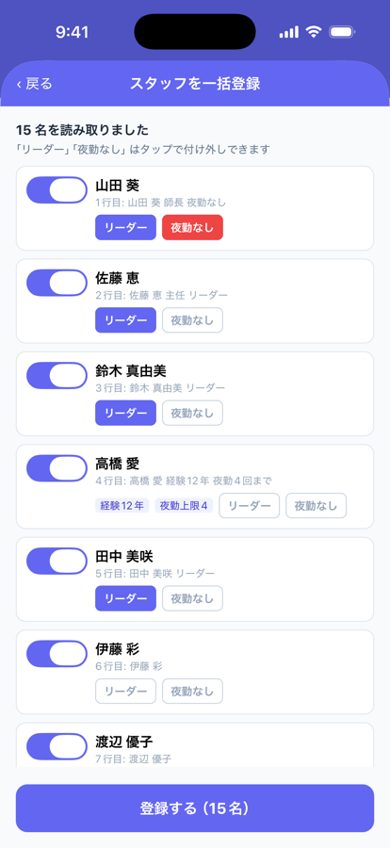
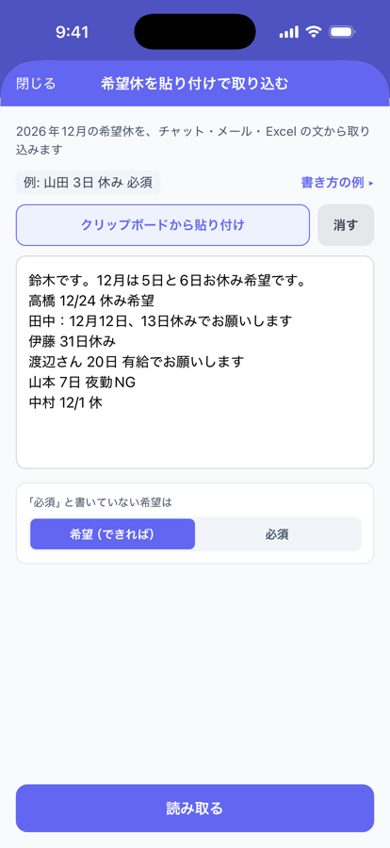
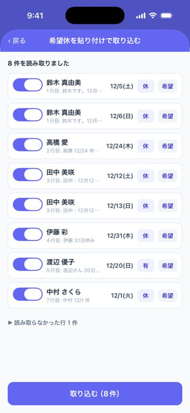
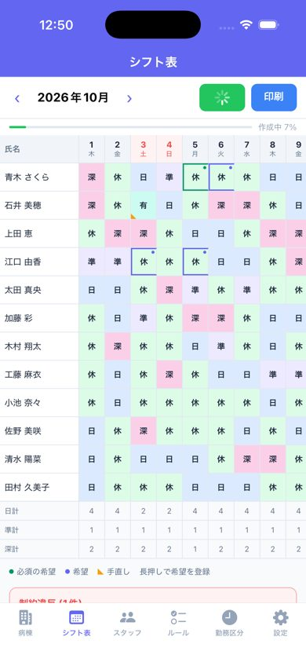
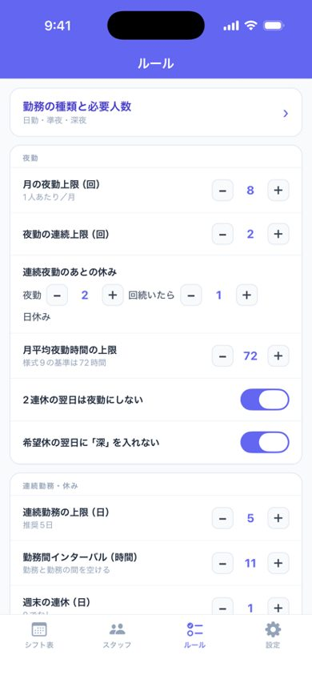
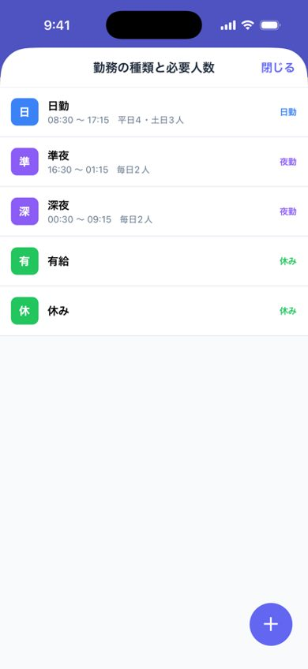

はじめに（5分で最初の1枚）
病棟名と必要人数を入れ、名簿を貼り付けて「作成」を押すだけで、夜勤回数や連続勤務のきまりを守ったシフト表ができます。
データはすべてiPhoneの中だけに保存され、外部には送信されません。ログインも、インターネット接続も不要です。
端末の「ダークモード」設定に連動して画面が切り替わります。夜間の作業も目に優しく使えます。
1はじめる
はじめて開くと、「シフト表」タブにこの画面が出ます。
- 病棟名を入れます（例: 3階東病棟）。
- 1日に必要な人数を、平日の日勤・土日の日勤・準夜・深夜の4つだけ入れます。
- 夜勤にリーダーが必ず要るなら、スイッチをオンのままにします。
- 「はじめる」を押します。
- まず触ってみたいときは、下の「サンプルで試す」で見本の病棟（12名）を作れます。消すときは「設定」→「病棟」の「サンプルを削除」。
- 2交代の病棟や、曜日ごとに人数が違う病棟は、あとで「ルール」→「勤務の種類と必要人数」で変えられます。

2スタッフを登録する
名簿を貼り付けてまとめて登録する
- Excelやメモの名簿をコピーします。1行に1人です。
- 「スタッフ」タブの「名簿を貼り付けてまとめて登録」を押して貼り付けます（2回目以降は右上の「取り込み」から）。
- 読み取った一覧で、「リーダー」「夜勤なし」をタップして付け外しし、「登録する」を押します。


1人ずつ追加・直す
右下の＋で追加、名前をタップで編集します。
- 夜勤可：オフにすると夜勤は入りません。
- リーダー：リーダーができる人はオン。
- 新人（1〜2年目）：新人だけの勤務にならないよう配慮します。
- 月の夜勤上限：空欄なら病棟の上限に従います。少なくしたい人だけ数字を入れます。
3希望休を入れる
チャットやメールで届いた希望をまとめて入れる
- チャット（LINE・院内チャットなど）やメールで届いた希望の文をコピーします。複数人分まとめてでもかまいません。
- 「シフト表」の表の下にある「希望休を貼り付けで取り込む」を押し、「クリップボードから貼り付け」→「読み取る」。
- 読み取った一覧（誰の・何日・何の勤務か）を確かめて「取り込む」を押します。
- 自信がない行（3交代で「夜勤」とだけ書かれた日など）は、オレンジの枠でオフになっています。確かめてからオンにしてください。
- 「午前休」「無理です」「取り消し」の日や、別の月の日付は取り込みません。
① 1行に1人「名前 日付 勤務」 例: 山田 葵 3日 休み
② 必ず休みたい日は「必須」、できればの日は「できれば」 例: 鈴木 真由美 20日 休み 必須


1つずつ入れる
- 「シフト表」でマスを長押しします（空のマスでもOK）。
- 勤務を選び、「必須」か「希望（なるべく通す）」を選びます。

4「作成」を押す
- 「‹ ›」で作りたい月を選び、右上の「作成」を押します。数秒〜十数秒で、上に進み具合（%）が出ます。
- 守りきれなかったことがあれば、画面上部に赤い件数バッジが出ます。すべて解消すると緑のチェック「このまま印刷できます」に変わります。詳細は表の下の「制約違反」一覧へ。直し方は「5」へ。
- マスをタップするたびに勤務が切り替わります。そのまま手直しできます。
- 手直ししたマスにはオレンジの三角が付き、もう一度「作成」しても残ります。
- もう一度「作成」を押すと、手直しは残したまま別の案で組み直します。
- 前の月の表があれば、月末の勤務を見て月初の連勤や夜勤明けも守ります。

5違反をまとめて直す
違反があると、違反一覧に赤い「違反をまとめて直す」ボタンが出ます。押すと10〜20秒で次の3つを行います。
- 組み替え：手直ししたマスと必須の希望は動かさずに、違反を減らします。
- 原因：埋まらない日に、なぜ入れる人がいないのかを出します。
- 設定の案：必要人数を減らす・リーダー必須を外すなど、違反が減る変え方を、組み直した件数つきで最大3つ出します。
「この表にする」か「この設定で直す」を押すだけです。変えた設定は、あとから「ルール」で戻せます。

6印刷する・PDFで送る
右上の「印刷」で、A4横・色分け・凡例つきで印刷できます（AirPrint対応プリンター）。
表の下の「PDFにしてチャット・メールで送る」なら、「勤務表のみ」か「勤務表＋集計」を選んで、PDFで送ったり保存したりできます。コンビニのネットプリントでも印刷できます。

7病院のパソコンへ写す・集計を見る
1人ずつ大きく表示
- 表の下の「1人ずつ大きく表示」を押します。
- 1人分の1か月が大きく出ます。見ながら病院のパソコンに打ち込みます。
- 打ち終えたら「この人は病院のパソコンに入力済み」にチェックを付けて「次の人」へ。途中でやめても、次は未入力の人から始まります。

夜勤時間（様式9）と公平性の集計
表の下から開きます。月平均夜勤時間と、夜勤回数・休み・希望の通り方の偏りを確かめられます（提出用の帳票ではなく確認用です）。
8ルールを変える
「ルール」タブで変えます。
- 勤務の種類と必要人数：一番上。勤務の時刻、曜日ごとの必要人数、「リーダーを必ず1人」を変えられます。
- 夜勤：月の夜勤上限、夜勤の連続上限、連続夜勤のあとの休み、月平均夜勤時間の上限（様式9）
- 連続勤務の上限、勤務間インターバル（初期11時間）、週末の連休、2連休の翌日は夜勤にしない
- 夜勤明けの翌日：「深夜の翌日に入れてよい勤務」で、深夜の翌日の日勤などを許可できます（勤務間インターバルが足りない並びは出ません）
- 禁止したい勤務の並び（記号を順に押して作ります）、一緒にしないペア
手直しから覚えたこと
アプリは師長の手直しを月をまたいで数え、病棟のやり方を覚えます。たまると「ルール」タブに出ます。
- 「深夜の翌日に日勤を2回入れました」→ [許可する] で、次から自動でもその並びを使います。
- 「自動で入った「日→深」を3回変えました」→ [禁止にする] で、次から自動作成がその並びを避けます（休み・有給を含む並びや、日勤→日勤のように同じ勤務が続く並びは出ません）。
- いらないものは [無視]。勝手にルールが変わることはありません。
覚えたことができると、手直しした直後に画面の下へ「手直しから覚えたことがあります（ルールで確認）」と数秒出ます。押すとルールタブの一番上に表示されます。
初期設定では「土日の休みの翌日は深夜にしない」も守ります（この項目は今のところ画面からは変えられません）。病棟の名前の変更や、月の表のリセットは「設定」タブにあります。


困ったとき
Q. 「作成」しても制約違反がたくさん出る
まず違反一覧の中の「違反をまとめて直す」を押してください（「5」を参照）。原因と、違反が減る設定の変え方を表示します。
多くの場合、人数に対して条件が厳しすぎます。「必須」の希望が多すぎる場合も組みにくくなります。
Q. 月を切り替えたら表が消えた
表は月ごとに保存されています。「‹ ›」で元の月に戻ると表示されます。
Q. データを消したい／機種変更したい
「設定」の「◯月のシフト表をリセット」で、表示中の月の表を消去できます。データは端末内だけに保存されるため、機種変更では自動で移りません。
そのほかのご質問・ご要望は nurseshift@clawtechjp.com へ。サポート ／ プライバシーポリシー